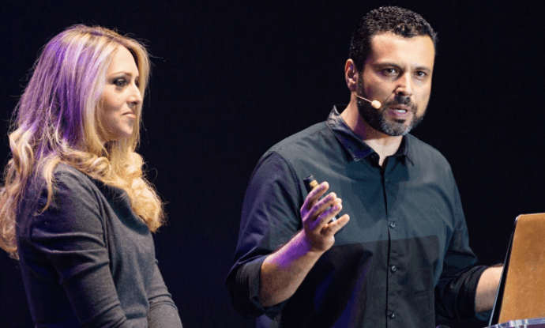
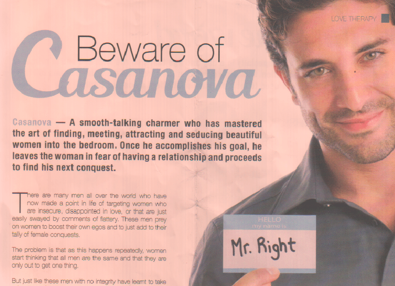

< < < Back
UCKG Church Affiliate Tells Women “Blue-Ball English Men Until They Marry You” – Return Of Kings
The UK chapter of the Universal Church of the Kingdom of God (“UCKG”), a controversial Christian sect based on Prosperity Theology, is using its house organ, Universal, to encourage women to shun players only interested in one night stands in favour of provider betas who are willing to postpone sex until marriage.
The advice page warns women to the “behaviour and tricks” of “Casanovas” who use them for sex, before encouraging them to choose ”men of integrity” willing to commit to marriage. UCKG is a worldwide evangelical church based in Brazil, and is known for sharp financial practices. In the UK it is known for its aggressive promotion in impoverished black areas and its connection to the Victoria Climbie child abuse case.
Who is the Universal Church of the Kingdom of God?
Bishop Renato Cardoso and his wife Cristiane, daughter of CKG’s billionaire founder Edir Macedo, at a Love School event.
The Universal Church of the Kingdom of God is an international Pentecostal church with headquarters in São Paulo, Brazil. The “Church” has been accused of money laundering, charlatanism, and witchcraft. It is banned in several African countries.
The church applies Prosperity Theology, a doctrine which states that financial success is the will of God, and that donations will increase one’s material wealth. The founder of UCKG, Edir Macedo, is worth an estimated $950 million. The UCKG considers that the first 10% of congregants’ income “belongs to God” as a tithe payable to the Church as soon as possible in order to guarantee salvation.
In London the UCKG are active in areas like Brixton, Stratford and Kilburn. Congregants are drawn from black communities in deprived areas. In 2000, Marie Therese Kouao and her boyfriend Carl Manning were sentenced to life for the murder of Kouao’s great niece Victoria Climbie, who was burnt with cigarettes, tied up, and beaten with bike chains and hammers.
The case precipitated an overhaul of UK Social Services. At the inquest it was revealed that Climbie had been taken to the Finsbury Park branch of the UCKG in the days before her death. The UCKG pastor who saw her allegedly said that he suspected she was being abused, but he thought Victoria was possessed by the devil, and she could be “healed” with prayers so he didn’t call social services or the police.
Precautionary measures for born-again sluts

So what is this dodgy corporate church telling its women congregants on the subject of dating strategy? The piece starts by warning them to the well known player archetype—the game-conversant cad:
Casanova-A smooth-talking charmer who has mastered the art of finding, meeting, attracting and seducing beautiful women into the bedroom. Once he accomplishes his goal, he leaves the woman in fear of having a relationship and proceeds to find his next conquest.
An archetype we all recognise, then. The author continues:
There are many men all over the world who have made a point in life of targeting women who are insecure, disappointed in love, or that are just easily swayed by comments of flattery, These men prey on women to boost their own egos and to just add to their tally of female conquests.
Men who seek no strings attached sex are simply notch count hyenas in search of validation and women who accept their advances are insecure. Only sex had within the institution of marriage is legitimate.
But just like these men with no integrity have learnt to take advantage of certain women, it’s important for women also to spot these kind of men and their behaviour and tricks.
Because only “certain women” are susceptible to game.
A man of no integrity, yesterday
Here are a few pointers: If it sounds too good to be true, it probably is: If he is saying a world of nice things to hear, and he doesn’t even know you yet, then something is up.
In other words, if it appears he is running good game, it’s likely he is not the pliant beta schlub you are waiting for. He might even be a Recovering Average Frustrated Chump getting ideas above his station and gunning for that R-selected quick lay.
If he is really serious, he will tread carefully so as not to get involved too quickly before he finds out who you are. It is better that the guy is taking his time, than him wanting to speed things along at the speed of sound.
Women are encouraged to bottleneck men into a Blue Pill dating strategy—k-selected attraction and endless coffee dates “getting to know each other,” presumably all paid for by a beta who is “playing by the rules” of traditional courtship.
Closed for business until marriage: if he says he wants to “share his love with you physically” so that he can commit to you through marriage, then something is wrong. That part of the relationship is so special that it should wait until marriage. Actually, if he realty wants to prove his love for you, he can marry you, What better way to prove his love than to marry you?
Thought this advice might be good if applied on a society-wide scale form an early age, there is conveniently no mention of whether the bride to be is a 21-year-old virgin or a born-again slut who has ridden the cock carousel into oblivion and is now looking for a two-legged life insurance policy willing to foot her pedicure bills into old age.
The “Casanovas” are degenerates who should be treated with contempt for trying to sleep with women without marrying them, but born-again sluts making prospective husbands wait for months (if not years) before they have what alphas got on the first night are, of course, perfectly honourable. The advice continues:
Beware of physiological games : Some of these men are great at making women feel guilty if they do not give in to their advances. Remember that you are not obligated to do anything that you don’t want to do. Those who love respect other people’s boundaries. If he makes you feel uncomfortable or pressured, end things immediately.
Women love a good con
My first reaction was to think that since UCKG is a business concern dedicated to extracting cash from worshippers, banging the marriage drum is a way of widening the contributor base. How better to do this than by brainwashing women into the need to tie up a beta schlub for the long term?
On a closer reading, and notwithstanding that marriage is a central plank of the Church’s programme at its sell-out Love School events, this is simply classic empowerment snake oil for women, and has precedent.
In his illuminating “The Road To Whoredom Is Paved With Abstinence,” Emmanuel Goldstein reviews a similar ruse, The 30-Day Love Detox by Dr. Wendy Walsh, a television quack from Canada. The good doctor (of psychology) advises women to hold out, because “you’ve got a 90 percent chance of being broken up within one year.”
Goldstein points out that the advice is based on a fallacy, since Walsh conflates correlation with causation (women who are able to hold out for 30 days are more likely to have longer relationships anyway). The mere act of waiting is not a guarantee means of ensuring a long lasting relationship, but sounds convincing as a cure-all, quick fix because it is conceptually simple.
This is similar to the way in which NoFap is presented to gamma incels as a shortcut to alpha status and a bottomless pool of pum-pum. The message is “avoid masturbation, and all else will follow.” Substitute gamma incels for fickle women looking for a fast track to the stable relationship they crave after a prime spent on the Carousel, and you have a good, profitable Abstinence con similar to the Secret. Yet as Goldstein points out, refusing men sex (if women can manage it) is not enough:
When a woman isn’t rewarding the man with sex, she must find other ways to keep a high value man waiting. First and foremost, she must show that she won’t change her mind halfway through the ‘waiting period,’ lest she bail and waste the man’s time. Secondly, she should make the wait as pleasant as possible for him, to ensure he will stick around. That means looking superb, being a great conversationalist and offering him tasty, home-made meals. … Don’t expect Walsh to tell any of that to her audience – that would mean doing something for a man.
Similarly, the UCKG’s inevitably female advice columnist gives no advice to her readers as to what exactly is going to keep men waiting around for a lot longer than the 30 days advocated by Walsh. The scenario envisaged is one of the potential suitor subjecting himself self denial and financial expenditure in return for a chance to marry a woman who is supposedly so worthy that she is required to make no sacrifice in return.
The irony of UCKG telling women congregants that “If it sounds too good to be true, it probably is” is that the very same applies to the advice it’s giving them. It’s a “money for nothing” scheme which asks nothing of women other than that they hold off the fanny for an instant, free SMV boost.
Betafied men who are foolish enough to have been bamboozled by UCKG’s glossy corporate identity and been lassoed into a blue-ball waiting game by one of its women followers would be well advised to remind himself to Iron Rule of Tomassi #3:
Any woman who makes you wait for sex, or by her actions implies she is making you wait for sex; the sex is NEVER worth the wait.
And if the sex is not worth the wait, then neither is the marriage. Sexuality, says Rollo, is a spontaneous chemical reaction between two parties, not a process of negotiation. You grievously are wasting time and opportunities to meet better prospective women in waiting for marriage to shag any woman, let alone one that belongs to a dodgy, cultish church led by a billionaire.
Read Next: The Road To Whoredom Is Paved With Abstinence


{kind=link}
{kind=link}
{kind=link}